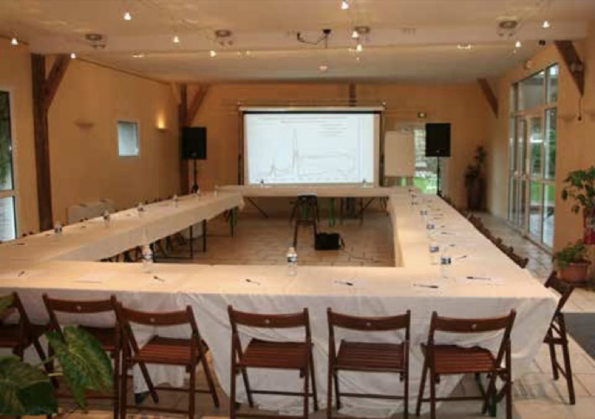
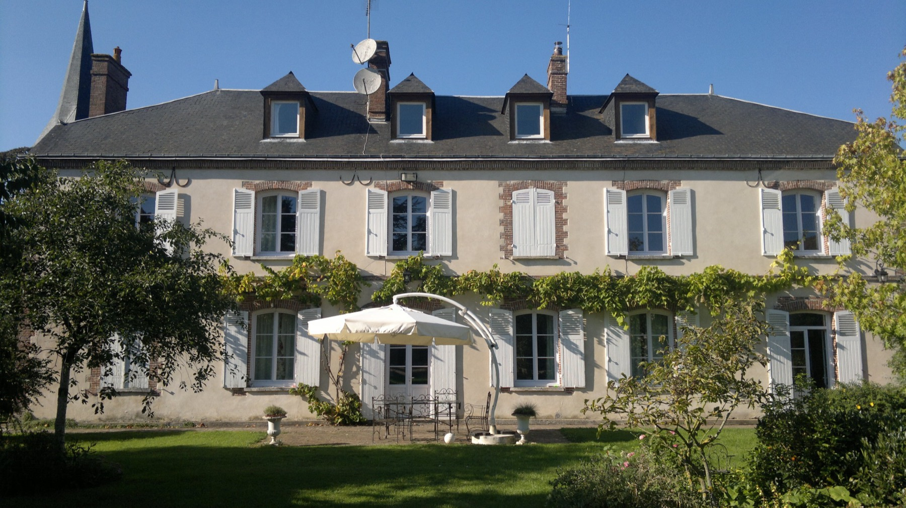
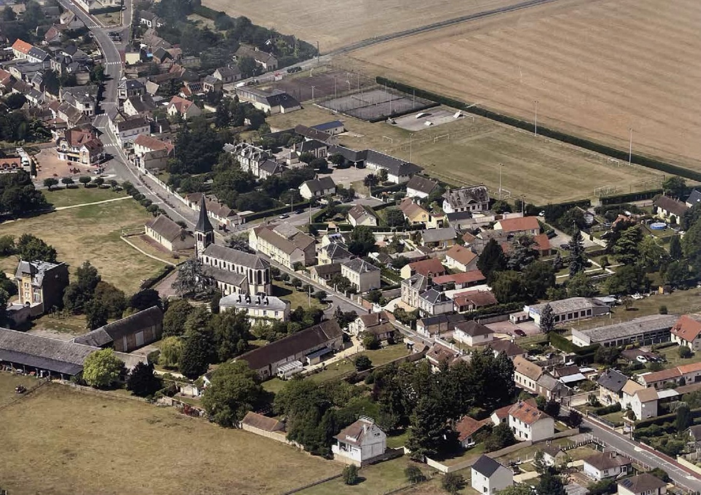
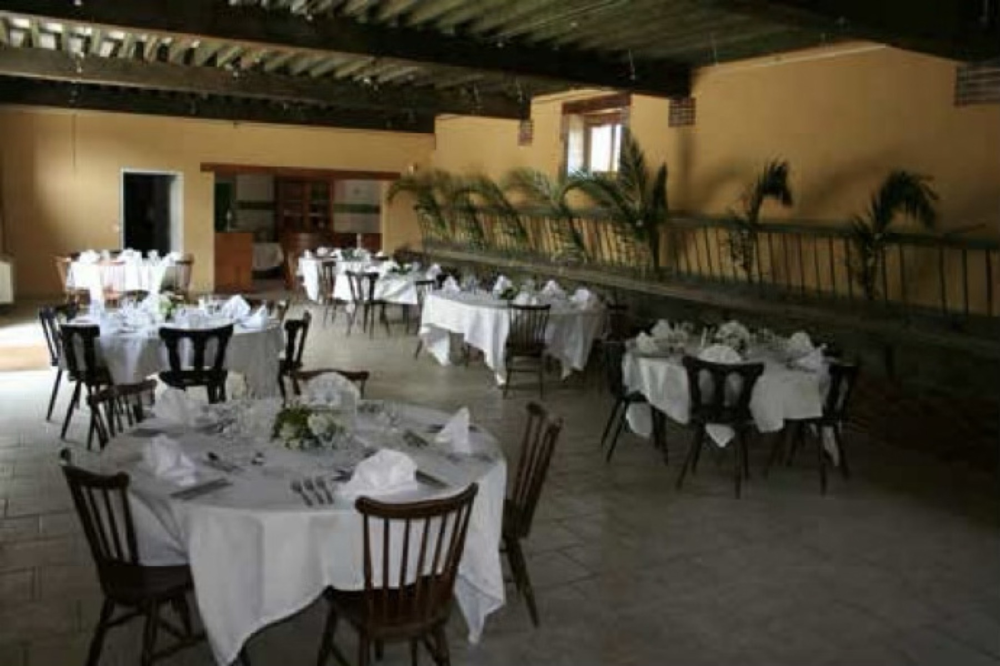
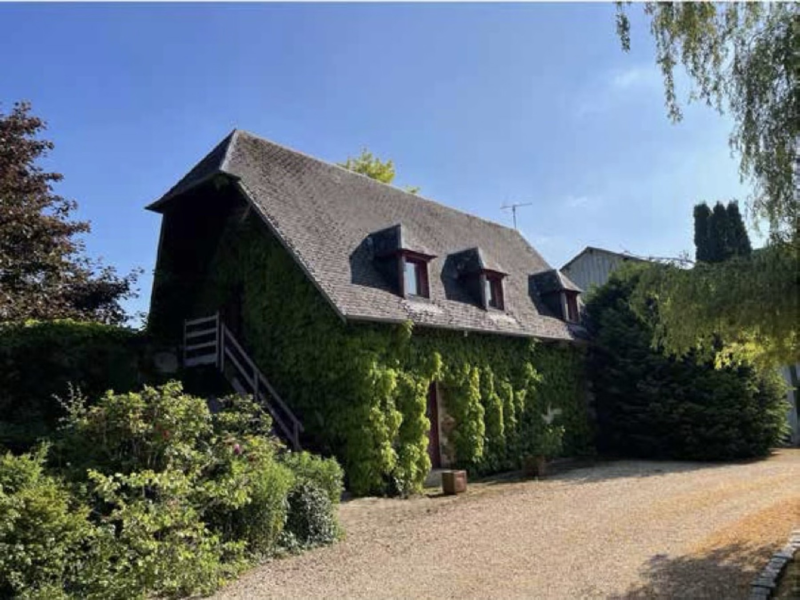
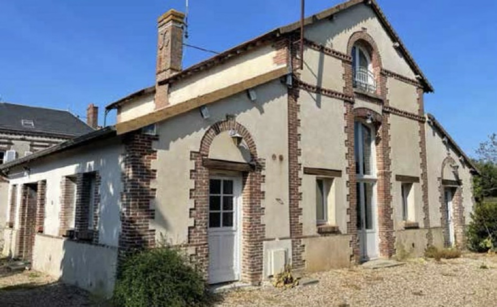
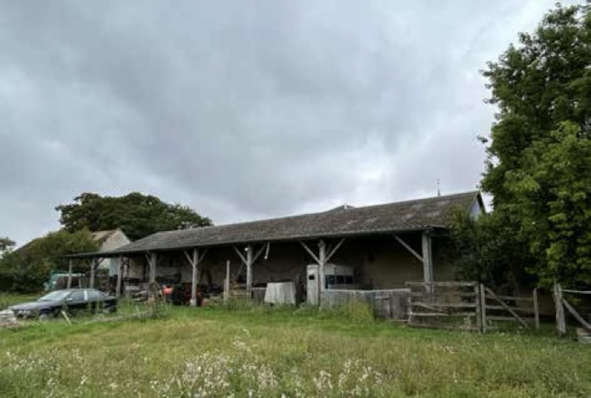
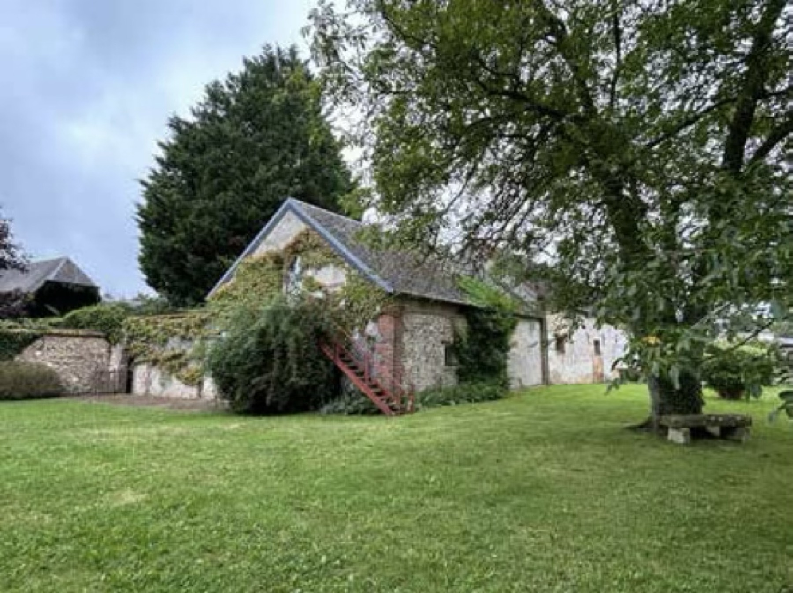
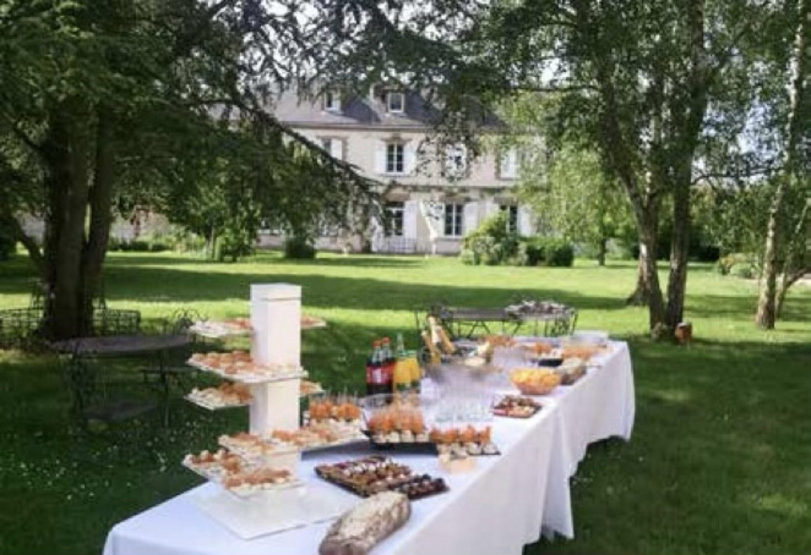
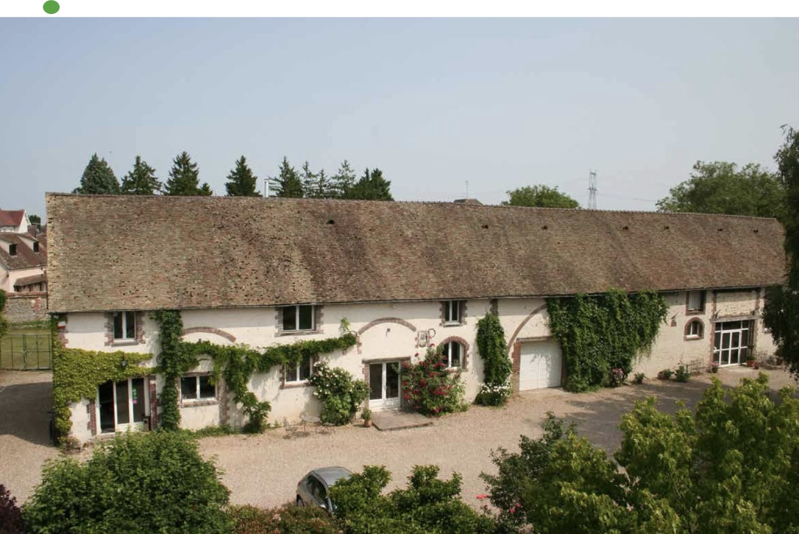

Opérationnel
Les salles de réception — 500 m²
Charpente apparente, lumière naturelle, configurations séminaire ou atelier. Le cœur du co-working et des offsites dès le jour un.

Lutherium est un projet de campus de travail et de création, connecté au monde, dédié à la musique, aux métiers de la création et à la facture instrumentale : séminaires d'équipe, résidences de création, journées de travail accompagnées. Nous étudions sa viabilité — et nous avons besoin de votre avis.
La Couture-Boussey fabrique des instruments à vent depuis le XVIIᵉ siècle. Hotteterre, Lot, Godfroy, Buffet : les dynasties de facteurs nées ici ont équipé les orchestres de Paris, Londres et New York. Le village possède toujours son musée des instruments à vent. Le métier porte un nom : la facture instrumentale.
La Ferme des Luthiers est l'une de ces maisons. Elle appartient à la lignée des Lot, facteurs de flûtes traversières, depuis plus de 300 ans. Ses granges ont servi au travail des flûtes, puis à l'élevage, puis aux séminaires et aux mariages.
Lutherium propose de leur donner un quatrième usage : un lieu de travail et de création où des musiciens, des développeurs, des designers, des startups et des organisations culturelles viennent se concentrer, produire et se rencontrer — relié en permanence à une communauté internationale par la fibre, un studio et un programme en ligne.

La Couture-Boussey, Eure — le domaine en bordure du bourg historique.
Nous pensons qu'un lieu de ce type devient viable aujourd'hui, pour quatre raisons. L'étude ci-dessous sert à vérifier si nous avons raison.
Les professionnels de la création travaillent à distance, mais mal : chez eux, sans studio, sans pairs, sans acoustique.
Composer, écrire, coder, prototyper demandent des blocs de temps longs que la ville fragmente.
Le séminaire d'entreprise banalisé s'essouffle. Un patrimoine vivant et une histoire réelle se racontent.
Music Hackspace réunit depuis plus de dix ans une communauté internationale de musiciens, développeurs et chercheurs en son — cours en ligne, ateliers, rencontres — répartie sur plusieurs continents et sans lieu physique où se retrouver. Lutherium lui donne une adresse.
Le domaine est déjà partiellement exploitable. Les salles de réception accueillent séminaires et événements depuis les années 2000 — c'est là que le pilote démarrerait, sans travaux lourds.

Charpente apparente, lumière naturelle, configurations séminaire ou atelier. Le cœur du co-working et des offsites dès le jour un.

Concerts, restitutions, conférences, mariages. Une source de revenus existante qui finance la montée en charge.

Bâtiment rénové avec studio indépendant. Destiné aux résidences de création et à l'hébergement des membres de passage.

Ensemble de bâtiments avec appartement. Ateliers, lutherie, fabrication, prototypage — le retour du travail de la matière.

Volume brut au sol. Le potentiel le plus important du site : studios acoustiques, salle de répétition, grand atelier.

Bâtiments de pierre et parcelles constructibles : hébergement long séjour, extension, jardins de travail en extérieur.
Paris Saint-Lazare → Évreux-Normandie, environ 1 h, liaisons fréquentes. Puis 20 minutes de route jusqu'au domaine : navette groupée les jours d'ouverture et pour les séminaires, covoiturage entre membres le reste du temps.
80 km de Paris par l'A13 puis la N13, environ 1 h porte-à-porte hors heures de pointe. Stationnement sur place, deux accès distincts au domaine, livraisons et matériel volumineux possibles.
C'est le point faible assumé du site, et l'une des questions de l'étude. Navette gare, forfaits séjour et arrivées groupées sont les réponses envisagées — le but étant de vendre un séjour plutôt qu'un aller-retour quotidien.
Le domaine n'est pas classé ni inscrit au titre des monuments historiques. C'est un patrimoine rural privé, ordinaire par son statut et singulier par son histoire : des bâtiments agricoles et artisanaux liés depuis trois siècles à la fabrication des instruments à vent, visibles depuis la voie publique, en bordure du bourg. Leur restauration est la condition de tout le reste.
Murs, façades et toitures avant tout aménagement intérieur. Charpentes et couvertures des granges, maçonneries de pierre et de brique, menuiseries : c'est le programme de restauration qui conditionne l'usage, et non l'inverse. Aucun travail ne sera engagé avant labellisation et avis de l'architecte des Bâtiments de France.
Un patrimoine restauré doit pouvoir se visiter. Le projet prévoit des journées portes ouvertes, la participation aux Journées européennes du patrimoine, des concerts et restitutions publiques dans la grande salle, et un lien avec le musée des instruments à vent du village.
L'ambition n'est pas commémorative. La Forge et les ateliers ont vocation à accueillir des facteurs d'instruments en activité, des résidences d'artisans et de la transmission de savoir-faire — le métier pratiqué, pas seulement raconté.
Les bâtiments de pierre — l'enveloppe à restaurer avant tout usage nouveau.
Lutherium ne loue pas des mètres carrés. Chaque format est une prestation de services — accueil, animation, programme, accompagnement technique, restauration et hébergement organisés. Les montants ci-dessous sont des hypothèses de travail, pas une grille commerciale : ils servent à mesurer votre consentement à payer.
⚠︎ Hypothèses non contractuelles. Rien n'est construit, rien n'est ouvert, rien n'est en vente, et aucun local n'est proposé à la location. Cette page sert exclusivement à évaluer la demande.
Le principe : ne rien construire avant d'avoir prouvé la demande, et financer chaque phase par les revenus de la précédente.
Cette étude de marché. Mesurer la demande, les segments, le consentement à payer et la distance acceptable. Aucun investissement.
En coursOuverture de journées de co-working dans les salles de réception existantes, une à deux fois par semaine, plus deux offsites tests. Investissement minimal : fibre, mobilier, assurance.
Si l'étude est concluanteAménagement de la Bergerie et de la Forge : hébergement, studio d'enregistrement, ateliers. Lancement du programme de résidences et du lien en ligne avec la communauté internationale.
Après 12 mois de pilote rentableReconversion des 550 m² : studios acoustiques, salle de répétition, grand atelier de fabrication. Phase capitalistique, financée par emprunt, subventions patrimoine et partenaires.
Horizon 3–5 ansRevenu récurrent, faible marge unitaire, essentiel pour la vie du lieu.
Forte marge, activité déjà éprouvée sur le site. Le moteur financier des premières années.
Panier élevé, saisonnalité maîtrisable, fort attrait international.
Concerts, masterclasses, captations diffusées à la communauté mondiale.
Le caractère patrimonial et musical du site ouvre des dispositifs régionaux et culturels.

Le parc — restauration, événements et travail en extérieur à la belle saison.
La société qui exploitera le lieu est destinée à être constituée sous statut d'économie sociale et solidaire. Ce n'est pas une étiquette : cela engage la gouvernance, l'affectation du résultat et la finalité du projet, et cela se décide à la rédaction des statuts — donc maintenant.
Formation, ateliers et compagnonnage autour de la facture instrumentale et des métiers du son. Accueillir des artisans en activité et organiser la transmission à des apprenants est la raison d'être du lieu, pas un supplément.
Emplois non délocalisables en milieu rural, recours aux entreprises et artisans du bassin d'Évreux pour la restauration, tarifs adaptés pour les habitants de la commune et de l'agglomération.
Le patrimoine restauré est accessible : portes ouvertes, Journées européennes du patrimoine, concerts et restitutions de résidence gratuits ou à prix libre, partenariat avec le musée des instruments à vent.
Gouvernance associant salariés et parties prenantes, écarts de rémunération encadrés, majorité du résultat affectée aux réserves et à la restauration des bâtiments plutôt qu'à la distribution. Le projet n'est pas construit pour être revendu.
Descendant de la famille Lot, propriétaire et gestionnaire de La Ferme des Luthiers, dont il assure la conservation et l'exploitation. Il dirige Music Hackspace, organisation qui forme et réunit une communauté internationale de musiciens et de technologues.
Le projet réunit deux choses qu'il connaît bien : un patrimoine familial de trois siècles consacré à la fabrication d'instruments, et un réseau mondial de créateurs qui travaillent déjà ensemble à distance — sans lieu où se retrouver.
Il conseille par ailleurs Mindset Music Ventures et dirige Chordline Ventures, structures d'investissement sans lien capitalistique avec Lutherium ni avec le domaine.

Le questionnaire plus bas sert à mesurer la demande. Si votre demande est précise, écrivez-nous directement : nous répondons à chacune.
Vous cherchez un lieu pour deux jours d'équipe, hors de Paris, avec une histoire à raconter. Dites-nous vos dates, votre effectif et votre budget par personne : nous vous dirons ce qui est possible dès le pilote.
Artistes, compositeurs, facteurs d'instruments, chercheurs en son : le programme de résidences ouvrira en phase 2. Nous constituons dès maintenant la première promotion pressentie et cherchons à comprendre vos besoins d'atelier et de studio.
Mécénat, dons, financement participatif, prêts ou titres participatifs : la restauration de l'enveloppe des bâtiments se financera en partie par des soutiens privés, sans ouverture du capital. Les particuliers comme les entreprises peuvent y contribuer.
Commune, agglomération, Région, services du patrimoine, partenaires culturels et journalistes : le dossier de présentation, les plans et les éléments financiers sont disponibles sur demande.
Quatre minutes. Vos réponses déterminent si le projet se fait, et sous quelle forme. Aucune obligation, aucune revente de données.